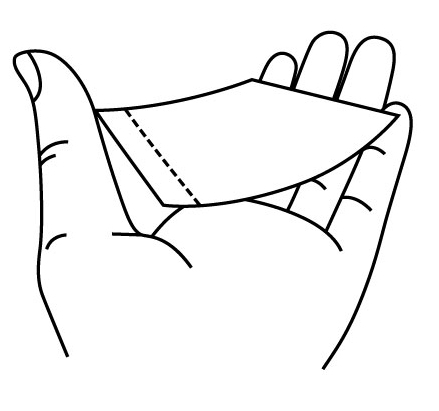
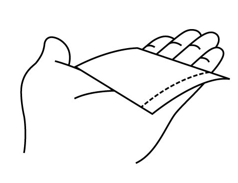

Paper feed error!
Out of paper or paper has accumulated too much static due to climate issues, resulting in paper feed problems. Please check paper status and reload paper ; if problem still occurs, try to putting less paper. Or if paper is slightly bent, bend the paper in the opposite direction till flat,

do not touch the surface of the paper in order to avoid leaving fingerprints.

Tap 'OK' when the problem is solved, and send the photo again.
進紙不成功！
可能是相紙已經用完或是相紙因天候因素造成相紙之間靜電吸附嚴重而無法順利進紙，請檢查相紙狀態並重新整理相紙；如果您無法解決進紙問題，可嘗試著將紙匣中的相紙數目減少，如果發現相紙有翹曲，可以適度輕輕地反曲相紙使其較為平整，
唯須注意請勿碰觸相紙的列印面以避免指紋殘留。
錯誤排除後請點擊 [OK]，然後請再試一次。
进纸不成功！
可能是相纸已经用完或是相纸因天候因素造成相纸之间静电吸附严重而无法顺利进纸，请检查相纸状态并重新整理相纸；如果您无法解决进纸问题，可尝试着将纸匣中的相纸数目减少，如果发现相纸有翘曲，可以适度轻轻地反曲相纸使其较为平整，
唯须注意请勿碰触相纸的打印面以避免指纹残留。
错误排除后请点击 [OK]，然后重新传送照片。
給紙エラー！
用紙切れ、あるいは、気候の問題により、紙が蓄積し過ぎて、給紙にも問題が発生しました。 紙の状態を確認し、用紙をセットし直してください。それでも問題が発生する場合は、入れる用紙を減らしてみてください。 または、紙がわずかに曲がっている場合、平らになるまで反対方向に紙を折り曲げます、
指紋を残さないようにするために、紙の表面に触れないでください。
ミスを排除した後、"OK"を押して再試行してください。
Erreur d'alimentation en papier !
Plus de papier ou le papier s'est accolé à cause d'électricité statique causée par des problèmes d'environnements, ce qui cause des problèmes d'alimentation en papier. Veuillez vérifier l'état du papier et recharger du papier. Si le problème persiste, essayez de mettre moins de papier. Ou si le papier est légèrement plié, pliez le papier dans la direction opposée pour le rendre plat ;
ne touchez pas la surface du papier pour éviter de laisser des traces de doigts.
Tapez « OK » lorsque le problème est résolu et envoyez de nouveau la photo.
급지 오류!
용지가 떨어졌거나 용지가 날씨 때문에 너무 서로 달라붙어 급지 문제가 발생했습니다. 용지 상태를 확인하고 다시 급지하십시오. 문제가 지속되면 용지를 일부 빼십시오. 또는 용지가 약간 휜 경우 용지가 평평해질 때까지 용지를 반대 방향으로 펴십시오.
이 경우 지문이 묻지 않도록 용지 표면을 만지지 마십시오.
문제가 해결되면 'OK'을 눌러 사진을 다시 보내십시오.